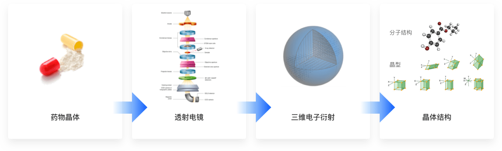

三维电子衍射技术
单晶X射线晶体学(SCXRD)是药物小分子，蛋白质大分子以及其他各种有机和无机物原子结构，分子构型和晶型确认的“金标准”。
一束X射线被发射向含有一个上百万个规律
排量的相同分子所组成的晶体，通过追踪X射线如何从晶体中的原子上弹回，研究人员能阐明每个原子在分子中的位置。
SCXRD的缺点在于，
X射线与物质发生作用的几率很小，需要足够大的晶体才能产生可以探测到的衍射信号。但对于药物小分子来说，通常至少需要超过200微米尺寸的晶体。
加州理工学院（Caltech）有机化学家Brian
Stoltz表示，“真正拖延时间的是获得足够大小的晶体。这可能需要数周、几个月，甚至好几年。”
相比X射线，电子与物质发生作用的几率大大增强。因此，通过电子进行衍射实验可将所需晶体的尺寸
降低至约50纳米，从而极大降低了晶体生长的难度和时间。与此同时，由于电子束可同时用来观测晶体，在透射电镜下，还可轻易进行晶体形貌的区分和选择。

用电子取代传统的X射线可以实现诸多优势
·纳米晶体: 极大减小测试所需晶体的尺寸，从传统单晶X射线衍射所需的约200 µm减小至电子衍射所需的约0.05 µm
·混合相: 可以对混合样品中的所有相进行晶型和结构解析，包括主相和低含量的杂相。并且统计各相含量和晶习
·自动化: 可对同一样品内上千个不同晶体进行自动化数据收集，得到全面的样品的数据
·快速: 数据收集的速度是传统X射线衍射的10至50倍